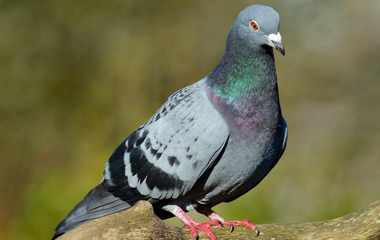

Pigeon

This specific bird is called a Rock Dove,
more commonly known in NY as a pigeon. It's
beautiful iridesent feathers can be seen all
over the city, especially in Central Park where
they often walk up to you to beg for food.
Most see a flock of pigeons as a hinderance,
however the tame nature of this bird is something
to recognize.